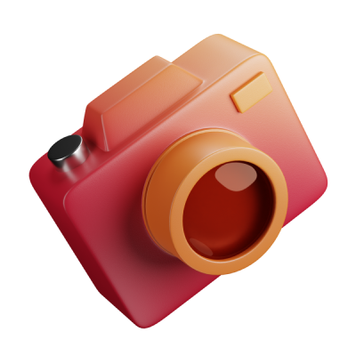
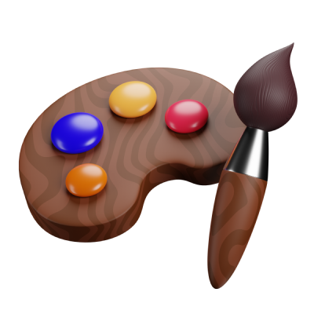
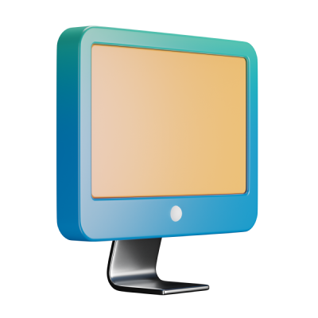

AUDÍFONOS
LUZ DE ESTUDIO
Iluminación dirigida.
Textura y contraste.
Producto en primer plano.
Fotografía profesional
Social media
Diseño web
Programación web
Soy Luis Villegas, diseñador gráfico. Me dedico a la fotografía profesional, el social media, el diseño web y la programación web. Integro inteligencia artificial en las cuatro áreas para impulsar la creatividad y desarrollar soluciones visuales y digitales.
Fotografía profesional · Social media · Diseño web · Programación web
Inteligencia artificial integrada en fotografía, contenido, diseño y desarrollo web.
Experiencia por completar.
Herramientas por completar.
Formación por completar.

02 Social
04 Programación
// Exploración visual Muestras y conceptos para presentar las cuatro áreas.
Iluminación dirigida.
Textura y contraste.
Producto en primer plano.
Sombras profundas.
Contornos y reflejos.
Composición de producto.
Integro inteligencia artificial en el desarrollo de experiencias web. Esta demo permite filtrar imágenes por categoría y abrirlas en detalle.
Demo local / HTML / CSS / JavaScriptHTML / CSS / JavaScript
Desarrollo impulsado por IA

Social media
IA integradaPiezas de referencia · Ángel López ↗